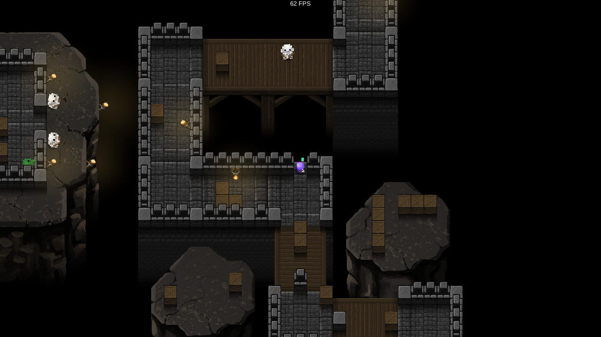
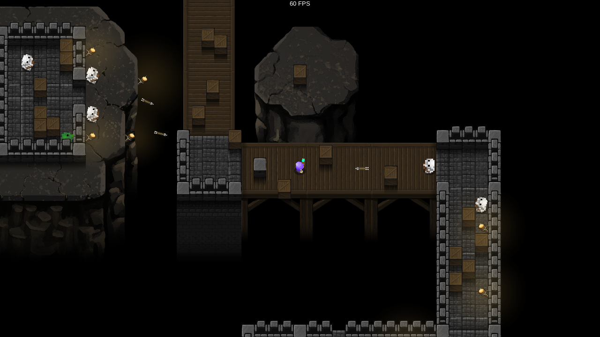
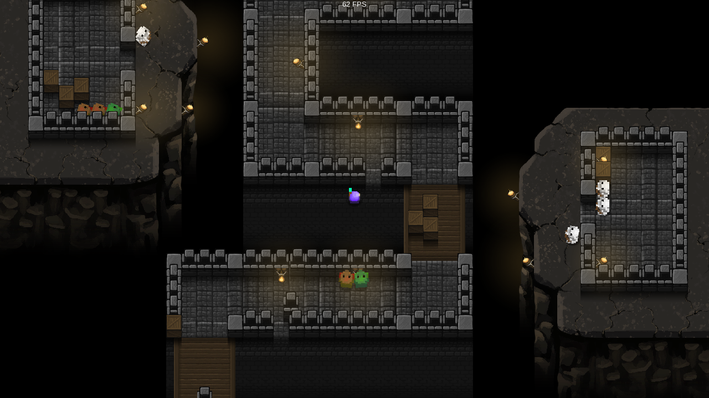

Dear diary and anyone with an internet connection,
First ever Spooky Dungeon dev log entry. I made some things.
More level generation things. Not going to go into super detail here, but I have my level generation separated into procedural and semi-procedural sections. I'm currently working on the procedural sections, which basically just makes a long hallway, and then straps "additives" to it to make it look like anything other than a long hallway. This weekend, I added the logic to my level generator that figures out where and what types of additives can be added. Obviously we don't want any overlaps or anything weird, so this logic had to be somewhat robust. My additives are divided into categories by shape, and basically come out looking like tetris pieces. Based on the hallway that the initial run has created, it figures out where it can slide additives in, and then will add them randomly. A square additive (2x2 nodes) might be placed in a corner, but a pipe (1x3 nodes) might be placed along an edge. I only have like one variant for each of these (content creation takes FOREVER), but at least the backend functionality is now in place.
Finished a bunch of content stuff. Created necessary assets to have earthy additives and wooden bridge parts of the hallways. These took a while to get right, color balances were really challenging. Shadows were entirely necessary to communicate the depth information I needed to. The whole game is structured around this idea that game objects are in the foreground and everything else in the background fades to black. This is great, as it works most of the time, but sometimes it sucks, because you need the fading part of objects to be dark to not attract too much attention to them (as whiter/more saturated colors tend to float upwards), and when objects get too dark, they might as well not be there. Just been trying to find where that line is for each individual object. Also the usual challenges that come with tiling, overlapping alphas, etc etc.
Random infrastructure stuff. Putting things in place so I can hop on the content creation pretty easily. This game is much more content rich than any of my previous, so trying to clean that pipeline early on (Was the pipeline term around when the og Mario was being made?). Finally set up some version control using git. Love git, but have never used it for a Unity project before, so I wasn't sure how well they would get along. Turns out it works just fine.
Some thoughts:
Level generation is this games make or break. It's so reliant on good level design, which really scares me, but I'm learning a lot having to be so particular about it. One of my natural tendencies is to make games in a way that emulates reality, which is good in some situations, but not this one. I'm having to fight those urges and force myself to make this horrible, shitty, non-functional dungeon so that it will be the most compatible with Spooky Dungeon's primary movement mechanic. I've seen other games do it, and I hate it when I notice it, but I think I just need to accept that's the reality of video games. Levels in real life are so much different. RL still has some pretty cool content though.